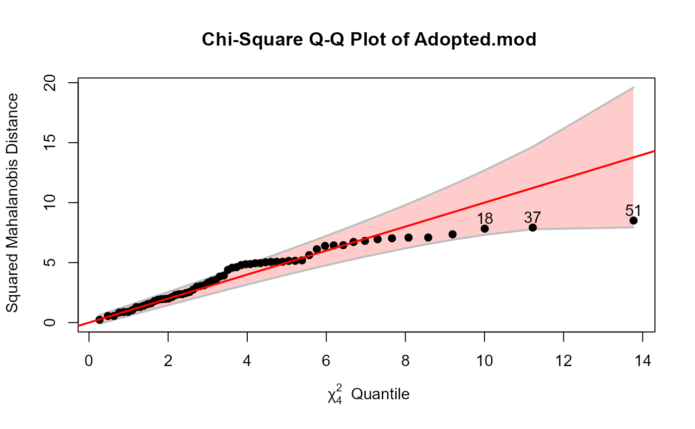
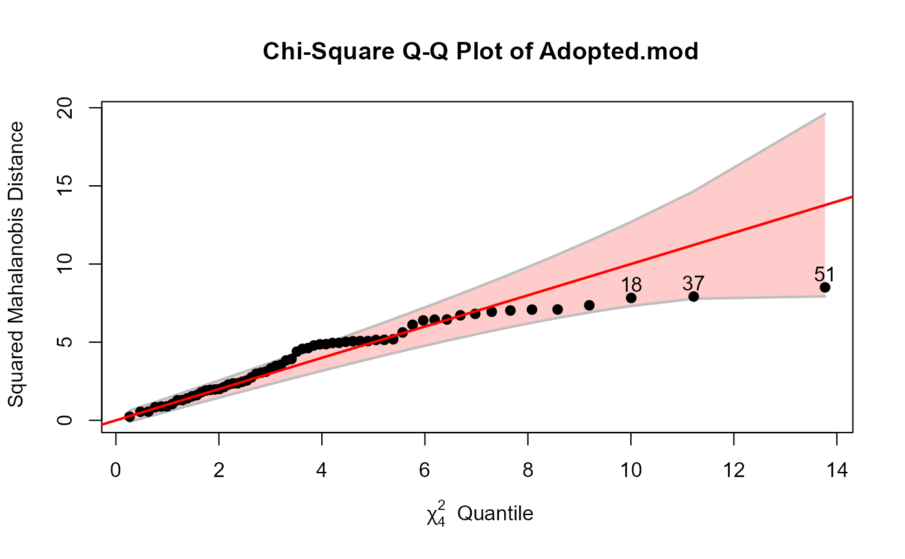
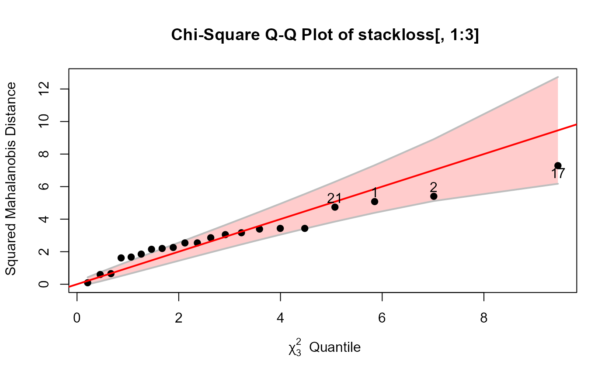
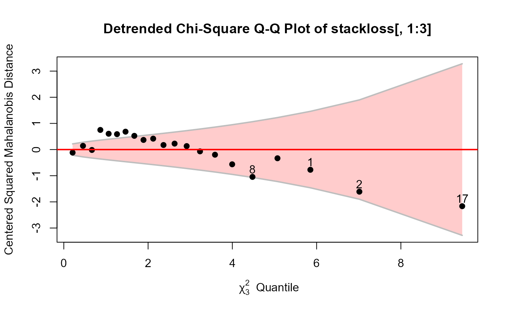
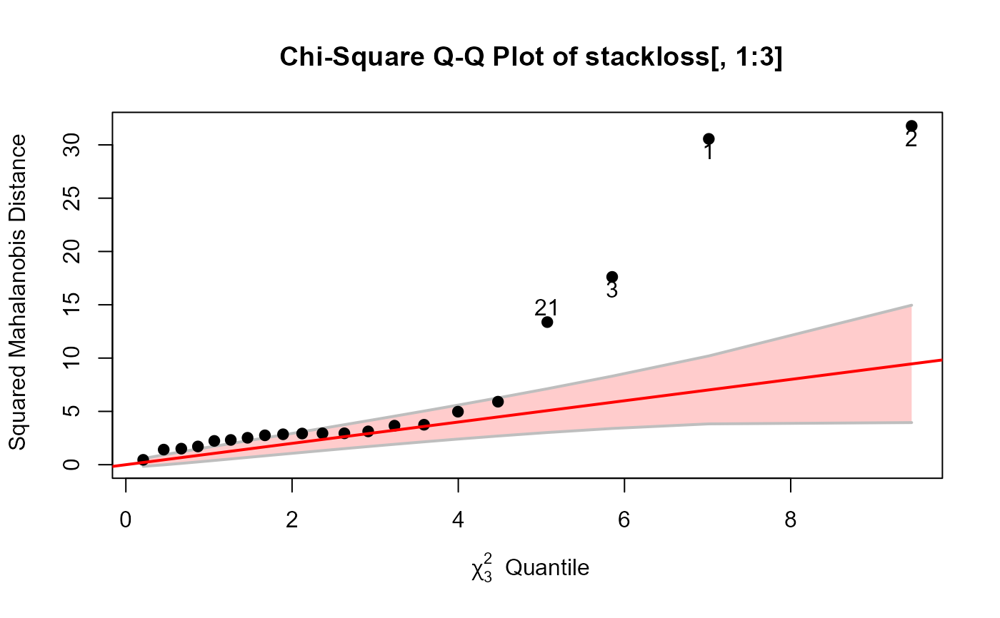
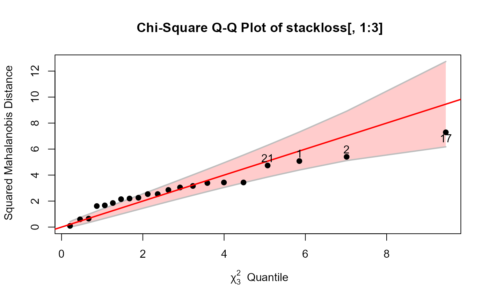
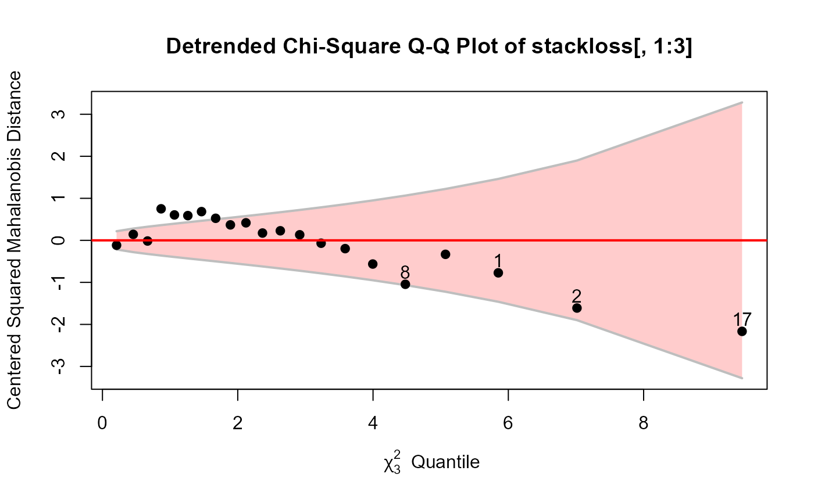
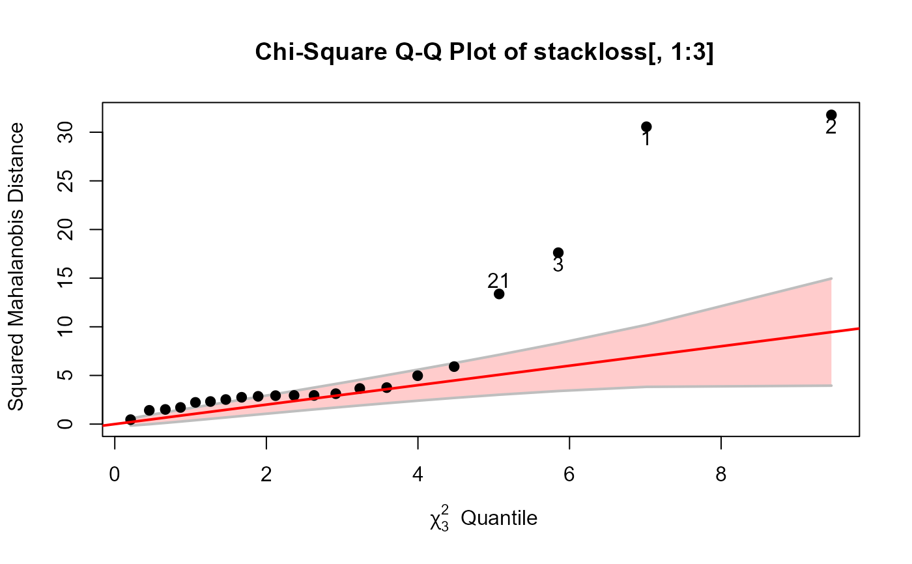

Chi Square Quantile-Quantile plots
cqplot.RdA chi square quantile-quantile plots show the relationship between data-based values which should be distributed as \(\chi^2\) and corresponding quantiles from the \(\chi^2\) distribution. In multivariate analyses, this is often used both to assess multivariate normality and check for outliers, using the Mahalanobis squared distances (\(D^2\)) of observations from the centroid.
cqplot is a more general version of similar functions
in other packages that produce chi square QQ plots.
It allows for classical Mahalanobis squared distances
as well as robust estimates based on the MVE and MCD;
it provides an approximate confidence (concentration) envelope around the
line of unit slope, a detrended version, where the reference line
is horizontal, the ability to identify or label unusual points,
and other graphical features.
The method for "mlm" objects applies this to the residuals from
the model.
cqplot(x, ...)
# S3 method for mlm
cqplot(x, ...)
# S3 method for default
cqplot(x, method = c("classical", "mcd", "mve"),
detrend = FALSE, pch = 19, col = palette()[1], cex = par("cex"),
ref.col = "red", ref.lwd = 2,
conf = 0.95, env.col = "gray", env.lwd = 2, env.lty = 1,
env.fill = TRUE, fill.alpha = 0.2,
fill.color = trans.colors(ref.col, fill.alpha),
labels = if (!is.null(rownames(x))) rownames(x) else 1:nrow(x),
id.n, id.method = "y", id.cex = 1, id.col = palette()[1],
xlab, ylab, main, what=deparse(substitute(x)), ylim, ...)Arguments
- x
either a numeric data frame or matrix for the default method, or an object of class
"mlm"representing a multivariate linear model. In the latter case, residuals from the model are plotted.- ...
Other arguments passed to methods
- method
estimation method used for center and covariance, one of:
"classical"(product-moment),"mcd"(minimum covariance determinant), or"mve"(minimum volume ellipsoid).- detrend
logical; if
FALSE, the plot shows values of \(D^2\) vs. \(\chi^2\). ifTRUE, the ordinate shows values of \(D^2 - \chi^2\)- pch
plot symbol for points Can be a vector of length equal to the number of rows in
x.- col
color for points; the default is the first entry in the current color palette (see
paletteandpar.- cex
character symbol size for points. Can be a vector of length equal to the number of rows in
x.- ref.col
Color for the reference line
- ref.lwd
Line width for the reference line
- conf
confidence coverage for the approximate confidence envelope
- env.col
line color for the boundary of the confidence envelope
- env.lwd
line width for the confidence envelope
- env.lty
line type for the confidence envelope
- env.fill
logical; should the confidence envelope be filled?
- fill.alpha
transparency value for
fill.color- fill.color
color used to fill the confidence envelope
- labels
vector of text strings to be used to identify points, defaults to
rownames(x)or observation numbers ifrownames(x)isNULL- id.n
number of points labeled. If
id.n=0, the default, no point identification occurs.- id.method
point identification method. The default
id.method="y"will identify theid.npoints with the largest value of abs(y-mean(y)). SeeshowLabelsfor other options.- id.cex
size of text for point labels
- id.col
color for point labels
- xlab
label for horizontal (theoretical quantiles) axis
- ylab
label for vertical (empirical quantiles) axis
- main
plot title
- what
the name of the object plotted; used in the construction of
mainwhen that is not specified.- ylim
limits for vertical axis. If not specified, the range of the confidence envelope is used.
Details
The calculation of the confidence envelope follows that used in the SAS program, http://www.datavis.ca/sasmac/cqplot.html which comes from Chambers et al. (1983), Section 6.8.
The essential formula is $$ SE ( z_{(i)} ) = \frac{\hat{\delta}}{g ( q_i )) \times \sqrt{ frac{ p_i (1-p_i} }{n}} $$ where \(z_{(i)}\) is the i-th order value of \(D^2\), \(\hat{\delta}\) is an estimate of the slope of the reference line obtained from the corresponding quartiles and \(g(q_i)\) is the density of the chi square distribution at the quantile \(q_i\).
Note that this confidence envelope applies only to the \(D^2\)
computed using the classical estimates of location and scatter.
The car::qqPlot() function provides for simulated envelopes,
but only for a univariate measure.
Oldford (2016) provides a general theory and methods for
QQ plots.
Value
Returns invisibly the
vector of squared Mahalanobis distances corresponding to the rows of xor the residuals of the model.
References
J. Chambers, W. S. Cleveland, B. Kleiner, P. A. Tukey (1983). Graphical methods for data analysis, Wadsworth.
R. W. Oldford (2016), "Self calibrating quantile-quantile plots", The American Statistician, 70, 74-90.
See also
Mahalanobis for calculation of Mahalanobis squared distance;
qqplot;
qqPlot can give a similar result for Mahalanobis squared distances
of data or residuals;
qqtest has many features for all types of QQ plots.
Examples
cqplot(iris[, 1:4])
 iris.mod <- lm(as.matrix(iris[,1:4]) ~ Species, data=iris)
cqplot(iris.mod, id.n=3)
# compare with car::qqPlot
car::qqPlot(Mahalanobis(iris[, 1:4]), dist="chisq", df=4)
iris.mod <- lm(as.matrix(iris[,1:4]) ~ Species, data=iris)
cqplot(iris.mod, id.n=3)
# compare with car::qqPlot
car::qqPlot(Mahalanobis(iris[, 1:4]), dist="chisq", df=4)
 #> [1] 132 135
# Adopted data
Adopted.mod <- lm(cbind(Age2IQ, Age4IQ, Age8IQ, Age13IQ) ~ AMED + BMIQ,
data=Adopted)
cqplot(Adopted.mod, id.n=3)

cqplot(Adopted.mod, id.n=3, method="mve")
#> [1] 132 135
# Adopted data
Adopted.mod <- lm(cbind(Age2IQ, Age4IQ, Age8IQ, Age13IQ) ~ AMED + BMIQ,
data=Adopted)
cqplot(Adopted.mod, id.n=3)

cqplot(Adopted.mod, id.n=3, method="mve")
 # Sake data
Sake.mod <- lm(cbind(taste, smell) ~ ., data=Sake)
cqplot(Sake.mod)
# Sake data
Sake.mod <- lm(cbind(taste, smell) ~ ., data=Sake)
cqplot(Sake.mod)
 cqplot(Sake.mod, method="mve", id.n=2)
cqplot(Sake.mod, method="mve", id.n=2)
 # SocialCog data -- one extreme outlier
data(SocialCog)
SC.mlm <- lm(cbind(MgeEmotions,ToM, ExtBias, PersBias) ~ Dx,
data=SocialCog)
cqplot(SC.mlm, id.n=1)
# SocialCog data -- one extreme outlier
data(SocialCog)
SC.mlm <- lm(cbind(MgeEmotions,ToM, ExtBias, PersBias) ~ Dx,
data=SocialCog)
cqplot(SC.mlm, id.n=1)
 # data frame example: stackloss data
data(stackloss)
cqplot(stackloss[, 1:3], id.n=4) # very strange

cqplot(stackloss[, 1:3], id.n=4, detrend=TRUE)

cqplot(stackloss[, 1:3], id.n=4, method="mve")
cqplot(stackloss[, 1:3], id.n=4, method="mcd")

# data frame example: stackloss data
data(stackloss)
cqplot(stackloss[, 1:3], id.n=4) # very strange

cqplot(stackloss[, 1:3], id.n=4, detrend=TRUE)

cqplot(stackloss[, 1:3], id.n=4, method="mve")
cqplot(stackloss[, 1:3], id.n=4, method="mcd")
